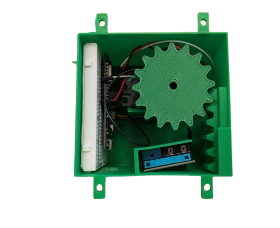

Air Quality Sensor System
Designed and prototyped a servo-actuated outdoor air quality sensor housing integrating a PM sensor, microcontroller, and detachable enclosure. Led CAD development and refined component packaging, door tracks, and attachment interfaces through testing, achieving readings comparable to outdoor control data while reducing printed housing mass to just 83.1g.